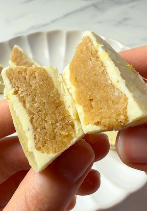

No Bake Lemon Cups (no oven, 15 minutes of work, the freezer does the rest)
i feel like I have become the ambassador of the no bake sweet treat club and I'm definitely not mad about it lol so here i am sharing another no bake sweet treat that is sure to go in your summer or spring dessert rotation. these small batch no bake mini lemon cups are so refreshing and satisfying! picture a soft cookie dough lemon filling covered in white chocolate and finished with a little extra lemon zest. now if you refuse to turn the oven on as soon as summer starts then you have found your perfect dessert, these lemon cups are foolproof, so refreshing and oh so delicious! + they are mini which somehow makes them taste better and they look adorbsss!
the mini silicone cupcake molds are the whole trick here. every cup gets its own full chocolate shell, so there's no slicing into bars and hoping for clean edges, and it cuts the freezer time down significantly. you just pop them out of the mold and they come out perfect, lemon filling and all. i like to add a lil coconut oil to the white chocolate to help the chocolate look extra shiny and smooth. it keeps the chocolate fluid enough to coat the sides of the molds properly and gives the finished cups a gloss that makes them look like a lot more work than they actually were. if you skip it, the recipe will still work but the chocolate sets a bit dull. the glossy finish with the sprinkle of lemon zest on top looks properly polished, all you need is a food processor and 15 minutes of prep time, then the freezer and molds do the rest.
i used a vanilla white chocolate on purpose here, the vanilla rounds out the lemon tartness instead of just sitting alongside it. regular white chocolate works fine but the flavour lands a bit flat without it. if you're using a plain refined sugar free white chocolate, a small splash of vanilla extract or a tiny bit of vanilla bean paste stirred into the melted chocolate before coating does the trick. you can also skip the vanilla entirely and these no bake lemon cups will still be delicious. opt for a refined sugar free white chocolate to keep the whole recipe completely refined sugar free.
i always melt the white chocolate using the double boiler method, which can be done in two ways. either you place a heatproof bowl over a pan of barely simmering water and melt the chocolate slowly over gentle heat, stirring periodically. or the second option (which is my fave) is to use two bowls: one smaller bowl for the white chocolate and one to hold boiled water. i boil the water in the kettle and fill up no more than half of the bowl so that when you place the second bowl with the white chocolate it doesn't spill! stir until properly melted and glossy. you can always use a microwave but melting white chocolate in the microwave is my worst enemy, it burns every single time and i have never managed to make it work lol. white chocolate is more delicate than dark chocolate and can seize or burn quickly if you rush it or use direct heat, so taking a couple of extra minutes to do it properly is really worth it. once the white chocolate is smooth and glossy, it's ready to coat the molds.
the lemon filling is made in a food processor and comes together in just a few minutes. almond flour gives it that dense, slightly buttery texture that works so well against the white chocolate shell, while the oat flour lightens it up just enough. the lemon zest is where the majority of the flavour lives so please be generous with it. the quarter of a lemon juiced adds the tartness that keeps the filling tasting citrusy rather than flat and the acid also amplifies what's already in the zest. you can adjust the lemon to your preference without affecting the texture of the dough too much, so feel free to go heavier or lighter. maple syrup is my sweetener of choice here, and the melted butter brings extra richness and helps bind the mixture so the balls hold their shape once frozen.
once all is blended in the food processor, take about a tablespoon of the lemon batter and shape into balls, the exact size will vary depending on your molds. since mine are mini i ended up with 5 to 6 balls of dough, as this is a small batch recipe. if you're using bigger molds, the recipe doubles easily. after the cups are assembled, they need 30 to 45 minutes in the freezer to set completely before you pop them out. you want the white chocolate to be fully set so the cups don't break when removing them from the molds, check at the 30 to 45 minute mark and allow longer if needed. the silicone makes removal easy and the cups come out cleanly with a gorgeous glossy shell. store in an airtight container in the freezer and let them sit at room temperature for five minutes before eating so the filling softens slightly and the shell loses its chill.
a little on the nutrition: almond flour is a great source of vitamin E, a fat-soluble antioxidant that helps protect cells from oxidative stress, as well as healthy monounsaturated fats and plant-based protein. lemon zest and juice are both rich in vitamin C and contain limonene, a compound found in citrus peel that has been studied for its antioxidant and anti-inflammatory properties. oat flour contributes soluble beta-glucan fibre, which supports gut health and helps stabilise blood sugar levels. so these no bake lemon cups are absolutely delicious and sneakily loaded with nutrients.
if you love a no bake cup moment, you also have to try my three ingredient peanut butter cups or my matcha chocolate cups!
Frequently Asked Questions
What molds should I use for these lemon cups?
mini silicone cupcake molds are what you need here and they're widely available online and in most kitchen shops. silicone is essential because it's flexible enough to let you pop the finished cups out without cracking the white chocolate shell. the exact size of the mold will determine how many cups you get from the recipe, mini cupcake molds give you a really cute, proportioned cup that's the perfect size without being too rich. standard cupcake size will work too but you may want to double the recipe for a better yield.
Can I use regular white chocolate instead of vanilla white chocolate?
absolutely, regular white chocolate works just as well. the vanilla white chocolate simply adds an extra depth to the chocolate shell that pairs nicely with the lemon. if you're using a regular white chocolate, adding a small splash of vanilla extract or a tiny amount of vanilla bean paste to the melted chocolate before coating does the trick, or skip the vanilla entirely.
Why do I add coconut oil to the white chocolate?
the coconut oil does two things: it makes the melted chocolate slightly thinner and easier to coat the molds with, and it gives the finished cups a beautiful glossy shine once set. it also helps the cups release from the silicone molds more cleanly. you only need a very small amount, just the quarter teaspoon in the recipe, but it makes a noticeable difference to how the cups look and how easily they come out.
How do I get the chocolate up the sides of the mold evenly?
the easiest method is to add a heaped teaspoon of melted chocolate to the base of the mold first, then use the back of a small spoon to slowly drag it up the sides in a circular motion until the whole interior is coated. it doesn't need to be perfectly even, the molds are forgiving. just work quickly while the chocolate is still fluid. if it starts to thicken before you've finished coating all the molds, gently re-warm the bowl over the double boiler for a few seconds to loosen it again.
Why is my no bake lemon filling crumbly and not holding together?
if the filling isn't coming together into a ball, it usually means the mixture needs a little more moisture. add an extra half tablespoon of maple syrup and blend again. the filling should feel slightly sticky and hold together when pressed between your fingers. if it still feels dry, a tiny splash of lemon juice added a few drops at a time can help bring it together without making it too wet.
How do I store these lemon cups?
store in an airtight container in the freezer for up to one month. they can also be kept in the fridge for 4 days, though the white chocolate shell will be softer at fridge temperature. serve straight from the freezer for that satisfying snap when you bite through the shell, or let them sit at room temperature for five minutes if you prefer the filling a little softer.
Why do I need to flash freeze the chocolate?
before adding the lemon filling to each mold, the white chocolate needs to be set enough to hold the layers together, that's why we flash freeze for a short amount of time. it's set enough to form a foundation but not completely frozen through. it may seem like an extra step but it cannot be skipped as this is what gives the lemon cups their structure.
Are these no bake lemon cups gluten free?
yes! both almond flour and oat flour are naturally gluten free. if you have coeliac disease or high sensitivity to gluten, make sure to use certified gluten free oat flour and double check the labels on your white chocolate and other packaged ingredients to avoid any cross contamination.
Pro Tips
- Use mini silicone cupcake molds, they are the easiest for this recipe and the cups pop out cleanly.
- When coating the molds, use the back of a small teaspoon to push the melted chocolate up the sides slowly and evenly.
- Add the coconut oil to the chocolate before you begin melting rather than after.
- Be generous with the lemon zest, that's where most of the flavour lives.
No Bake Lemon Cups

Ingredients
- White Chocolate Shell
- Lemon Filling
Instructions
- Step 1: Add the white chocolate and coconut oil to a heatproof bowl and melt using the double boiler method over barely simmering water, stirring until smooth and glossy.
- Step 2: Add a heaped teaspoon of melted chocolate to the base of each mini silicone cupcake mold and use the back of a small spoon to push it up the sides to coat evenly.
- Step 3: Flash freeze for 10 to 15 minutes until the chocolate shell is fully set.
- Step 4: Add all filling ingredients to a food processor and blend until fully combined.
- Step 5: Roll into 5 to 6 balls and press one firmly into each chocolate-coated mold.
- Step 6: Top with more melted white chocolate and a sprinkle of lemon zest.
- Step 7: Place back in the freezer for 30 to 45 minutes until completely set.
- Step 8: Pop out of the molds and enjoy!
Nutrition Facts
Per one serving (based on 6 cups):
*Nutritional information is estimated and will vary depending on the ingredients and brands you use. Basic macros don't reflect the full nutritional value including vitamins, minerals, antioxidants, and other beneficial compounds. Please use this as a guideline only.